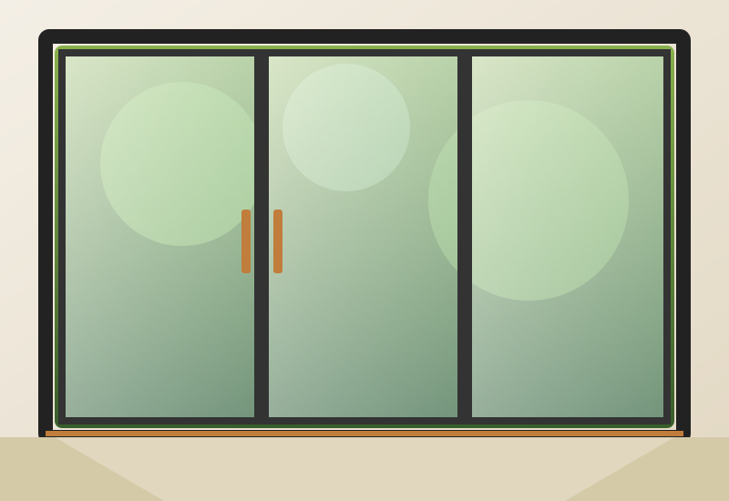
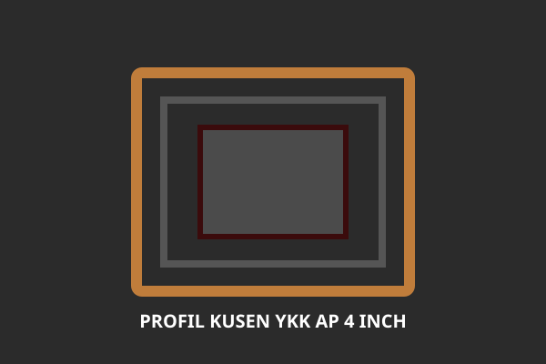
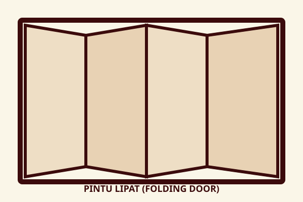
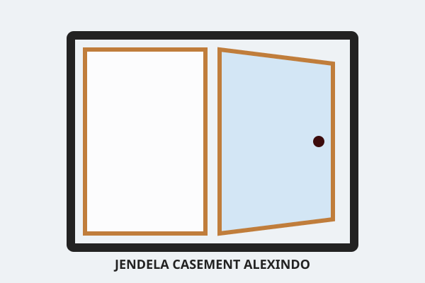
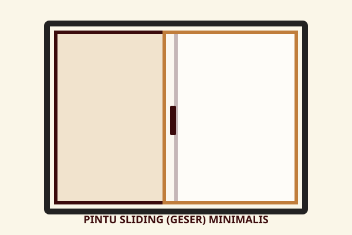
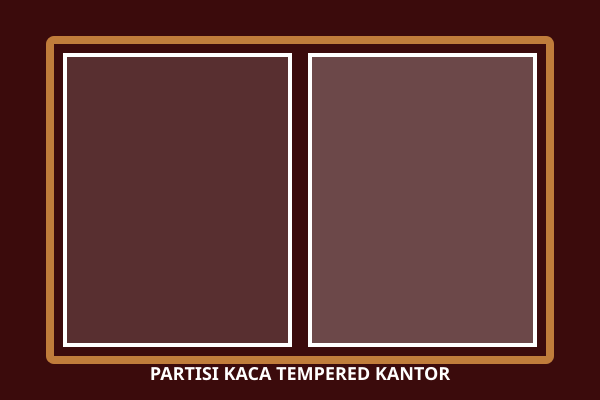
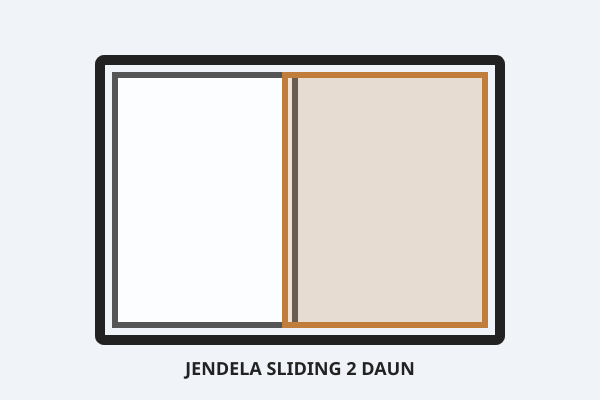

Kusen Aluminium YKK AP & Alexindo
Profil kusen 3 inch dan 4 inch berpresisi tinggi dengan pilihan warna Anodized Silver, Hitam, dan Cokelat.
SelengkapnyaMenghadirkan keindahan, kekuatan, dan ketahanan terhadap korosi melalui Fabrikasi Aluminium presisi tinggi di Malang Raya. Sempurna untuk hunian modern dan bangunan komersial.


KUSEN ALUMINIUM Malang adalah perusahaan aplikator dan spesialis pengerjaan kusen aluminium, pintu lipat/sliding, jendela casement, serta partisi kaca profesional di Malang. Melayani wilayah Kota Malang, Kabupaten Malang, Batu, Pasuruan, Kediri, Surabaya, dan sekitarnya dengan pendekatan presisi, terencana, dan rapi.
Variasi pilihan warna powder coating & anodized premium untuk menyesuaikan gaya arsitektur Anda.
Setiap potongan profil aluminium dikerjakan dengan mesin miter presisi tinggi, seal karet kedap air, serta penataan aksesoris kunci keamanan berstandar industri.
Bahan aluminium anodized dan powder coating tahan terhadap korosi dan cuaca ekstrem jangka panjang.
Profil slim dan elegan yang dapat disesuaikan dengan arsitektur rumah atau gedung kantor Anda.
Proses fabrikasi workshop 3-7 hari dan instalasi cepat di lokasi tanpa mengorbankan kualitas.
Rincian estimasi biaya transparan per meter lari/persegi tanpa adanya biaya tersembunyi.
Alur kerja yang terstruktur memastikan setiap pesanan berjalan lancar, presisi, dan tepat waktu.
Diskusikan tipe jendela/pintu dan warna profil pilihan via WA.
Tim teknis datang mengukur bukaan lubang kusen secara presisi.
Penyusunan gambar detail dan penawaran biaya resmi per meter.
Pemotongan profil aluminium & perakitan presisi di workshop.
Pemasangan di lokasi, pemberian sealant rapi, dan karet EPDM.
Pemeriksaan fungsi operasional kunci dan pemberian sertifikat garansi.
Pilihan produk berkualitas tinggi dari YKK AP, Alexindo, dan Forta untuk kebutuhan bangunan Anda.
Profil kusen 3 inch dan 4 inch berpresisi tinggi dengan pilihan warna Anodized Silver, Hitam, dan Cokelat.
Selengkapnya
Akses maksimal untuk teras dan taman rumah dengan sistem rel lipat heavy-duty anti macet.
Selengkapnya
Dilengkapi sistem peredam karet EPDM kedap suara dan engsel safety rambuncis berkeamanan tinggi.
Selengkapnya
Pintu geser efisien tempat untuk ruangan keluarga, akses balkon, dan sekat ruang rapat.
Selengkapnya
Sekat kaca tempered 10mm/12mm dengan frame aluminium minimalis modern untuk kantor dan ruko.
Selengkapnya
Jendela geser praktis dan mudah dirawat dengan penguncian crescent lock yang aman.
SelengkapnyaHitung perkiraan harga kusen & pintu aluminium Anda dan dapatkan rincian resmi via WhatsApp.
Kepuasan dan kepercayaan pemilik hunian dan kontraktor di Malang adalah bukti mutu pengerjaan kami.
"Pemasangan pintu lipat aluminium YKK AP di rumah villa Batu Malang sangat presisi. Rel lancar dan kedap udara dingin."
"Jendela casement Alexindo buatan KUSEN ALUMINIUM Malang hasilnya sangat rapi. Suara bising jalanan depan rumah berkurang drastis."
"Partisi kaca tempered 12mm frame aluminium hitam cafe kami dipasang tepat waktu sesuai deadline launching ruko."
Dokumentasi hasil pengerjaan pemasangan di berbagai proyek perumahan dan komersial di Malang Raya.
Jawaban cepat seputar pengerjaan kusen & pintu aluminium KUSEN ALUMINIUM Malang.
Konsultasikan kebutuhan spesifikasi material, ukuran bukaan, dan estimasi biaya per meter bersama tim spesialis KUSEN ALUMINIUM Malang. Survei lokasi gratis!